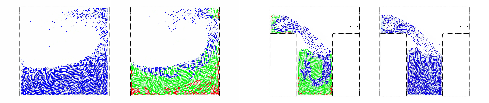

<div class="container">
  <div class="row">
    <main>
      <section class="col-md-12">
        <header>
          <h1>Exploring the Use of Adaptively Restrained Particles for Graphics Simulations</h1>
          <h2><small>Pierre-Luc Manteaux, François Faure, Stéphane Redon, Marie-Paule Cani</small></h2>
          <h2><small>VRIPHYS 2013</small></h2>
          <hr>
        </header>
        <section>
           <h2>Summary</h2>
          <p>
            In this paper, we explore the use of Adaptively Restrained (AR) particles for graphics simulations. Contrary to previous methods, Adaptively Restrained Particle Simulations (ARPS) do not adapt time or space sampling, but rather switch the positional degrees of freedom of particles on and off, while letting their momenta evolve. Therefore, inter-particles forces do not have to be updated at each time step, in contrast with traditional methods that spend a lot of time there. We present the initial formulation of ARPS that was introduced for molecular dynamics simulations, and explore its potential for Computer Graphics applications: We first adapt ARPS to particle-based fluid simulations and propose an efficient incremental algorithm to update forces and scalar fields. We then introduce a new implicit integration scheme enabling to use ARPS for cloth simulation as well. Our experiments show that this new, simple strategy for adaptive simulations can provide significant speedups more easily than traditional adaptive models.
          </p>
          <h2>Downloads</h2>
          [<a href= "https://hal.inria.fr/docs/00/91/46/53/PDF/arps-vriphys2013.pdf">Paper (PDF)</a>] [<a href= "https://hal.inria.fr/docs/00/91/46/53/VIDEO/VideoPaper1004.flv">Movie (FLV, 13.2MB)</a>] [<a href="./EARPS_VRIPHYS2013.bib">Bibtex</a>]
          <h2>Results</h2>
          <iframe width="560" height="315" src="https://www.youtube.com/embed/RpJjGAoqp50" allowfullscreen></iframe>
        </section>
      </section>
    </main>
  </div>
</div>
